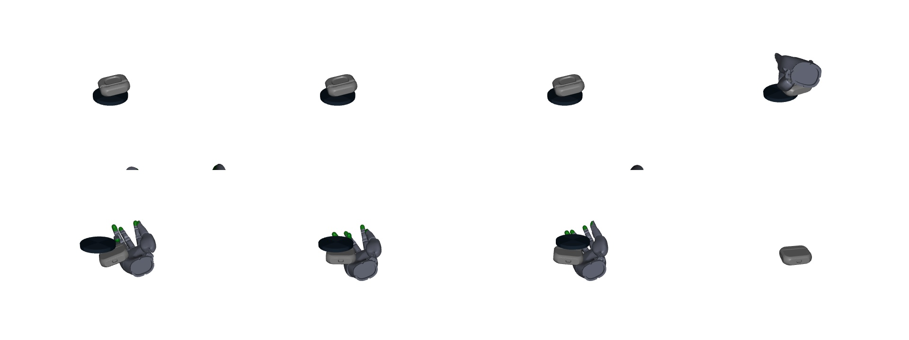

CounterfactualHOI
Training a dexterous hand policy from RGB, using counterfactual (video-generated) demonstrations of picking up, in-hand manipulating and setting down objects. Alvin, Anthony, Hyunsoo, Jayaram. Updated 2026-11-24.
Pipeline. 1.0 generate counterfactual videos with MiniMax H3 100 videos · 1.1 reconstruct the hand and object in 4D 10/10 real videos · 1.2 agentic refinement 10/10 · 1.3 retarget to the Sharpa hand FlashDexRetarget · 1.4 train a policy started
Step 1.1 went through three reconstruction methods, then an agentic refinement of the third. Each viewer shows the hand (blue), the object, the scene from the first frame (colored points) and the real camera's frustum with the current video frame, rotated so gravity points down. Drag to orbit, scroll to zoom; playback bar at the bottom.
1 · Do-as-I-Do on IMG_5710 and three MiniMax H3 edits
Our first method: Do-as-I-Do's reconstruction (HaWoR hand, SAM3D object, silhouette-scored object tracking, a fitted table). Input: one real clip (a hand picks up a case, spins it in the palm, sets it down) and three MiniMax H3 edits that swap the object for an apple, a lemon and a wooden block.
| clip | QC |
|---|---|
| Real reference video: AirPods case | table 0.97×0.58 m · silhouette IoU 0.82 · rotation flips (>20°/frame) 4% · up = GeoCalib gravity, 25.8° from the table normal ⚠ |
| Generated (MiniMax H3): red apple | table 0.48×0.42 m · silhouette IoU 0.60 · rotation flips (>20°/frame) 2% · up = GeoCalib gravity, 1.2° from the table normal |
| Generated (MiniMax H3): wooden block | table 0.79×0.62 m · silhouette IoU 0.63 · rotation flips (>20°/frame) 10% · up = GeoCalib gravity, 32.7° from the table normal ⚠ |
| Generated (MiniMax H3): lemon | table 0.52×0.35 m · silhouette IoU 0.77 · rotation flips (>20°/frame) 2% · up = GeoCalib gravity, 2.1° from the table normal |
What went wrong: the object's rotation flips by 50–160° from one frame to the next (its poses are scored by silhouette only), the hand sits 1.3–2.4 cm inside the object on most in-hand frames, and gravity from GeoCalib was 26–33° off on two of the four clips.
2 · Open-CHOIR on the 10 real videos
Open-CHOIR (SIGGRAPH Asia 2026): SAM2 masks, SAM3D object, Dyn-HaMR hand, then grasp-aware depth correction and contact-aware temporal fitting. Run on our 10 real videos: 5 objects (a RealSense-style camera, a tape roll, a spatula, a mug, a dish-soap bottle), each picked up and placed (pp) and picked up, rotated and placed (prp).
What went wrong: the object's depth drifts. It starts on the table but ends 3–20 cm in front of it when set down farther away, and its silhouette matches the video poorly (IoU 0.31–0.74 where the hand is off the object). Its SAM2 masks also drifted (a "hand" covering the whole table, a hand mask swallowing the held mug), and its copy of SAM3D drops the object's texture and 95% of its triangles.
→ All 10 CHOIR viewers (pp / prp tabs)
3 · Our pipeline on the same 10 videos
Metric video depth from Depth Pro 2, scaled so it agrees with the MANO hand (the hand's known size is the metric reference); per-frame SAM3 masks from text prompts; a textured SAM3D mesh of the object, sized and tracked through the video by FoundationPose on that depth (re-registering from the mask when a frame-by-frame check says the fit slipped); the hand moved onto the depth map. Hand, object and table share one metric depth.
Both methods scored on the same SAM3 masks: object silhouette IoU on the first and last frames (the hand is off the object there), and where the object ends up relative to the table once it is set down (0 is right).
| clip | CHOIR mask IoU first / last | ours mask IoU first / last | CHOIR object vs table at end | ours object vs table at end | depth scale from the hand |
|---|---|---|---|---|---|
| pp_anthony_real_1 | 0.44 / 0.74 | 0.92 / 0.95 | +0.2 cm | -0.4 cm | 1.169 |
| pp_anthony_real_2 | 0.59 / 0.45 | 0.93 / 0.89 | +20.0 cm | +1.8 cm | 1.009 |
| pp_anthony_real_3 | 0.57 / 0.55 | 0.89 / 0.80 | +12.5 cm | -0.5 cm | 1.045 |
| pp_anthony_real_4 | 0.69 / 0.73 | 0.84 / 0.85 | +6.0 cm | +1.1 cm | 1.005 |
| pp_anthony_real_5 | 0.61 / 0.47 | 0.91 / 0.89 | +8.4 cm | +2.1 cm | 1.022 |
| prp_anthony_real_1 | 0.52 / 0.31 | 0.94 / 0.84 | +6.3 cm | +1.5 cm | 0.992 |
| prp_anthony_real_2 | 0.55 / 0.50 | 0.91 / 0.92 | +5.5 cm | +2.5 cm | 1.060 |
| prp_anthony_real_3 | 0.58 / 0.57 | 0.91 / 0.84 | +8.6 cm | +2.0 cm | 1.046 |
| prp_anthony_real_4 | 0.72 / 0.74 | 0.94 / 0.95 | +3.2 cm | +1.0 cm | 0.994 |
| prp_anthony_real_5 | 0.52 / 0.51 | 0.92 / 0.89 | +6.0 cm | +2.3 cm | 0.946 |
→ All 10 viewers of our pipeline (pp / prp tabs, with QC frames)
4 · Agentic refinement of our reconstructions
An agent refines the reconstruction by looking at it against the video and editing its parameters with tools. The hand is only ever the MANO hand model's parameters (per frame its global orientation, position and 15 joint rotations, plus one hand shape per clip): no tool edits mesh vertices, so the hand always stays a valid human hand that a retargeter can read. The object is its pose per frame and its shape: the mesh is reconstructed from the first frame only, so its extent along the direction that frame looked along (the side it never saw) is a guess, and a scale along that direction (and across it) is part of the reconstruction.
One table for the whole clip. The camera is static (background points move less than 4 px over a clip), but the depth estimator's metric scale is not: in each frame's own depth map the table is flat to about 2 mm, yet its distance from the camera changes from frame to frame by 7–20% over a clip, mostly while the hand is in the scene, and the depth on the object and the hand changes with it (while the object rests, the depth on it follows the table's with slope 1, as if it moved up to 9 cm along the view). The table does not move, so it calibrates every frame: each frame's depth is scaled so that its table lies on one common plane, and the tracked object (its poses and the size of its mesh, which was measured in the first frame) and the hand are carried along. After that the table measured right around the object agrees with the one plane to about a millimetre wherever the object rests, and the object's two resting places agree on its height. Up is that plane's normal (3.2–4.2° from GeoCalib's gravity estimate on our clips). Per clip:
- Automatic fit (no LLM). The object's 6-DoF pose is fitted frame by frame to its SAM3 mask outside the hand and the depth (a search within a trust region, smoothed over time), and its poses are lightly smoothed (5 frames) to remove the pose tracker's frame-to-frame noise. Then fit_mano, a gradient-based fit of all the hand's MANO parameters over the whole clip at once (Adam on the GPU, ~15 s per clip): the detected 2D hand keypoints, the hand's SAM3 mask, the depth map (weighted by the image area each part of the hand covers), MANO's hand-pose prior and a pull to the hand tracker's pose, smoothness over time (joint angles, and the positions of the joints, the fingertips and the wrist: without the fingertips the fit follows the keypoints' frame-to-frame noise there), no penetration into the object (its signed distance field, at the hand's vertices and triangle centres with a 1.5 mm margin, so fingers cannot slip through a thin wall or handle) or the table, and the clip's hand shape. A second fit adds the occlusion order the video shows (the hand behind the object where the object is seen, in front of it where the hand is seen) and is kept only where it does not cost keypoint fit. Once the agent has labelled the phases, a search over the object's unseen extent runs where the scene says it is off (the object rests in the table or floats above it, or the hand is on the wrong side of it): each candidate gets the object and the hand re-fitted and is scored on the table, the mask and depth fit and the hand's fit.
- Agent. Claude (Opus 5.5) sees overlays of the rendered hand and object on the frames (with the SAM3 mask, the detected keypoints and the object's axes), the 3D scene from any side (hand red where it passes through the object, green where it touches), wrist and fingertip paths over time (jitter shows as zig-zags), and per-frame plots and numbers, including whether the hand really grips the object (thumb or palm against fingers). It labels the motion phases (approach, grasp, lift, carry, rotate, place, release, rest) and fixes what the automatic fit cannot: it re-runs fit_mano over the held phases with a grip term (the thumb and the closest fingers on the object's surface, the thumb's contact facing the fingers'), with more smoothing where the hand still jitters, moves or rotates the hand, turns fingers' MANO joints, pushes the palm out of the object, holds the object static or smooths it at rest, and fixes flips, jumps and lag with object edits or FoundationPose's re-registration hypotheses. It can scale the object's mesh (an object too thick on its unseen side cannot be gripped as the video shows, whatever the hand does) and re-fit the table plane. Every edit is a new version with before / after images and numbers, including the acceleration of the fastest fingertip around the edited frames and a warning when the edit made the hand or the object jump; it reverts what does not help. A fit over a frame range keeps the frames just outside it fixed and joins them smoothly.
- Reviewer. When the agent wants to finish, an independent reviewer (fresh context) judges the result in absolute terms, every phase next to the video and from four sides, and the agent must fix what it finds or say why it cannot. The final result is reviewed three more times; the majority verdict and all three votes are in each clip's caption.
- Verifier. A separate blind A/B judge compares the agent's result with the automatic fit on each changed range (overlays, 3D views from three sides, fingertip paths, a plot of the motion) and keeps the automatic fit wherever the agent's version looks worse. The span in which the hand holds the object is judged as one range, and what decides there is whether the object is really held. Kept and rejected ranges are joined smoothly, and the result is checked for frames where the hand jumps more than either version does.
- Second pass. The reviewer checks that merged result, and the agent gets a second pass on what it still finds, verified against the first pass's result.
Medians over each clip's frames, initial reconstruction → final.
| clip | hand keypoint error (px) | object mask IoU | hand triangles through the object while held | hand jitter while held (mm/frame²) | frames where a fingertip jumps | lifted frames with a real grip | flagged frames | verifier kept (chunks) | reviewer on the result | agent time |
|---|---|---|---|---|---|---|---|---|---|---|
| pp_anthony_real_1 | 30.3 → 15.2 | 0.94 → 0.96 | 0 → 0 | 3.4 → 1.2 | 5 → 0 | 0% → 88% | 113 → 44 | 6 / 8 | acceptable (0 high, 6 medium) | 26 min |
| pp_anthony_real_2 | 33.5 → 8.2 | 0.92 → 0.94 | 0 → 0 | 2.2 → 0.8 | 8 → 0 | 0% → 97% | 135 → 5 | 1 / 2 | good (0 high, 0 medium) | 3 min |
| pp_anthony_real_3 | 37.5 → 9.0 | 0.87 → 0.91 | 0 → 0 | 2.1 → 1.0 | 3 → 0 | 0% → 100% | 86 → 2 | 4 / 4 | good (0 high, 0 medium) | 8 min |
| pp_anthony_real_4 | 32.5 → 10.3 | 0.90 → 0.92 | 143 → 0 | 2.1 → 0.6 | 3 → 0 | 91% → 91% | 121 → 78 | 5 / 6 | acceptable (0 high, 2 medium) | 29 min |
| pp_anthony_real_5 | 41.7 → 12.5 | 0.88 → 0.89 | 95 → 0 | 3.1 → 1.5 | 2 → 0 | 0% → 100% | 77 → 1 | 4 / 4 | good (0 high, 0 medium) | 10 min |
| prp_anthony_real_1 | 27.9 → 8.6 | 0.85 → 0.94 | 45 → 0 | 1.9 → 0.7 | 12 → 0 | 72% → 99% | 262 → 47 | 9 / 10 | acceptable (3 high, 3 medium) | 32 min |
| prp_anthony_real_2 | 20.2 → 6.8 | 0.90 → 0.92 | 118 → 0 | 2.0 → 0.8 | 7 → 0 | 49% → 98% | 159 → 3 | 4 / 4 | acceptable (0 high, 1 medium) | 9 min |
| prp_anthony_real_3 | 24.9 → 9.8 | 0.92 → 0.94 | 53 → 0 | 2.3 → 0.6 | 6 → 0 | 62% → 98% | 204 → 31 | 8 / 10 | bad (3 high, 4 medium) | 29 min |
| prp_anthony_real_4 | 19.6 → 14.3 | 0.90 → 0.94 | 230 → 2 | 1.6 → 0.7 | 21 → 0 | 79% → 88% | 273 → 185 | 6 / 6 | bad (2 high, 7 medium) | 34 min |
| prp_anthony_real_5 | 24.9 → 9.1 | 0.87 → 0.94 | 172 → 0 | 2.1 → 0.7 | 6 → 0 | 95% → 100% | 259 → 46 | 4 / 6 | acceptable (0 high, 3 medium) | 37 min |
Blind A/B judgements over every frame of the 10 clips, in chunks (the span in which the hand holds the object is one chunk; the rest is split at phase boundaries, ≤ 60 frames), by the same judge as the verifier, which sees overlays, 3D views from three sides and a motion plot. Automatic fit vs final is not an independent test: the verifier already used that judge to keep the automatic fit wherever the agent's edit lost. The previous round used the depth maps as estimated (the scale drift above was in its object and hand trajectories) and a table plane fitted through the first and the last frame's depth.
| A | B | A better | B better | tie | clips |
|---|---|---|---|---|---|
| initial (no refinement) | automatic fit + agent (final) | 0 | 40 | 0 | 10 |
| automatic fit only (no agent) | automatic fit + agent (final) | 7 | 31 | 2 | 10 |
| previous round (the depth maps as estimated, the table fitted through two frames) | automatic fit + agent (final) | 10 | 30 | 0 | 10 |
Summary: median hand keypoint error 29 → 9 px; hand triangles through the object while held 74 → 0; hand jitter while held 2.1 → 0.8 mm/frame² (the hand tracker's own motion is the first number); frames where a fingertip jumps, summed over the 10 clips, 73 → 0 (a median hides these: a jump lasts two or three frames); lifted frames with the thumb or palm against the fingers 55% → 98% (a hook grip through a mug's handle is not counted, see the reviewer); object mask IoU 0.90 → 0.94. The object's extent along the first frame's viewing direction was changed on: pp_1 8.5 → 4.3 cm, pp_3 8.4 → 6.7 cm, prp_1 7.1 → 5.7 cm, prp_5 11.4 → 12.8 cm. The agent scaled an extent across that view on: pp_5 ×1.07, prp_4 ×1.05. Before that, the depth anchoring scaled every mesh as a whole, by ×0.94 to ×1.05 (the first frame's depth scale against the clip's). Against the previous round, the judge preferred this round on 30 chunks and the previous one on 10 (0 ties); on the spans in which the hand holds the object, on 6 of 10 clips. Reviewer on each final result (majority of three reviews): good: pp_2, pp_3, pp_5; acceptable: pp_1, pp_4, prp_1, prp_2, prp_5; bad: prp_3, prp_4.
Generated counterfactual videos (MiniMax H3)
5 · Retargeted motions (Sharpa Wave hand, physically simulated)
The agent-refined reconstructions (section 4: MANO hand + object poses) are turned into physically plausible robot motions with FlashDexRetarget: a kinematic retarget of the human hand to the Sharpa Wave hand (22 DoF, floating wrist) gives a reference per clip, then one reference-conditioned RL policy (FlashSAC, Isaac Lab) is trained over all 10 clips in simulation to make the simulated object follow the reconstructed one. The object, table and gravity are simulated; the hand has to really hold the object. Where an object's reconstructed underside (SAM3D cannot see it) made it tip over at rest in simulation (the metal case, the soap bottle), its collision mesh is flattened under the object at its reconstructed rest pose; the visual mesh and the trajectories are unchanged. The viewers show the policy's rollout of each clip next to the refined reconstruction it tracks. The policy was trained on an earlier refinement round (r7), which is what its page shows on the left. Its hand jitters: nothing in that run's reward penalised fast changes of the action. A run on round 10 (section 4 above), with a small reward on the action's rate of change, is paused at 116M of 300M steps, and this section will switch to it when it has finished. At 100M steps its actions change 6 times less from step to step than the same run without that reward (action rate 0.24 against 1.48). Its mean progress over the last 4 evaluations both runs have is 36% against 41%, a difference within what single evaluations vary by. Status: the final policy of this run (300M environment steps). Its object follows the reconstruction to 0.75 cm and 7° on average and ends 2.0 cm / 12° from it. Evaluations late in training differ from one another by more than they gain (mean progress 56%–72% over the last 100M steps), so the progress numbers below are one sample. Over the 10 clips the policy tracks a median 68% of each clip before the object first leaves 5 cm / 20° of the reconstruction (AdaDex's progress); 3/10 clips stay within it for the whole clip; the object is within 2 cm of the reconstruction on a median 96% of frames (Do-as-I-Do's sampling-based retargeting of the round-5 reconstructions: 39%).
→ Refined reconstruction (left) vs retargeted motion (right), pp and prp tabs
First retargeting test (IMG_5710)
Do-as-I-Do retargeting run on the Do-as-I-Do reconstruction of IMG_5710. Dataset processing, scene generation and IK work; the physics stage (MuJoCo Warp) ran 64 min and stopped early at step 1900/2567: the hand does not lift the case and pushes it off its pedestal at ~4.5 s (final object error 0.13 m).
